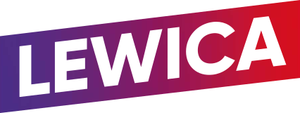

Polityczna oś konfliktu: PO/KO kontra PiS. Przedmiot sporu: kto może orzekać, które rozstrzygnięcia obowiązują i jak naprawić TK.
/
PO / KO
PO–PSL w 2015 r. · koalicja z KO po 2023 r.
Kwestionowanie obecnego TK i próba jego przebudowy.
2015
8 października większość PO–PSL wybiera pięć osób, w tym dwie na miejsca zwalniane dopiero w następnej kadencji Sejmu. Wybór tych dwóch osób „na zapas” jest punktem zapalnym kryzysu. TK w wyroku K 34/15 potwierdzi konstytucyjność podstawy wyboru trzech osób, a zakwestionuje ją dla dwóch pozostałych.
2024–2025
Nowa większość proponuje reformę. Rząd kwestionuje status TK i nie publikuje jego rozstrzygnięć.
2026
Sejm wybiera nowe osoby. Trwa spór o ich ślubowania i dopuszczenie do orzekania.
PiS
Większość Zjednoczonej Prawicy w latach 2015–2023.
Zmiany w TK po 2015 r. i obrona ich skutków.
2015
Nowa większość kwestionuje wszystkie październikowe wybory i wybiera kolejną piątkę — także na trzy prawidłowo obsadzone miejsca. Andrzej Duda nie odbiera ślubowania od trzech prawidłowo wybranych osób. Te kolejne decyzje utrwalają kryzys obsady TK.
2016–2023
Zmieniają się reguły działania, kierownictwo i skład Trybunału. Konflikt obejmuje jego niezależność.
SPÓR O ZMIANY
Prezydent Andrzej Duda kieruje reformę nowej większości do TK. Trybunał kwestionuje jej kluczowe przepisy.
WSPÓLNA STAWKA
Czy obywatele mogą ufać, że konstytucyjność prawa ocenia niezależny sąd?
§
Pomarańczowy · PO / KOGranatowy · PiSKolory identyfikują obozy polityczne. Prezydent i TK pozostają odrębnymi instytucjami.
Najpierw przeczytaj krok 1. Następnie naciśnij duży przycisk pod kartą, aby zobaczyć dalszy ciąg.
1
8 październikaWybór PO–PSL
2
2 grudniaPonowny wybór PiS
3
3 grudniaWyrok TK
4
Po wyrokuCo stało się w praktyce?
Odsłonięty krok 1 z 4.
Schemat pokazuje 5 z 15 miejsc. Pomarańczowy oznacza wybór przez większość PO–PSL, granatowy — wybór przez większość PiS. Zielony i czerwony w kroku 3 oznaczają ocenę podstawy prawnej.
03 / SYTUACJA DZIŚ
STAN WIEDZY: 17.10.2026
Nowy skład. Ten sam węzeł.
Sejm wybiera. Prezydent odbiera ślubowania. Prezes TK dopuszcza do pracy. Spór dotyczy granic tych kompetencji.
DROGA DO ORZEKANIA
1
Wybór przez Sejm
Konstytucja powierza wybór sędziów Sejmowi. W 2026 r. wybrano osiem osób.
WYBÓR
2
Ślubowanie „wobec Prezydenta”
Spór o to, czy wymagana jest jego fizyczna obecność i czy może wstrzymywać odebranie ślubowania.
SPÓR
3
Objęcie obowiązków
Pięcioro wybranych pozostaje niedopuszczonych do orzekania: czworo od kwietnia i Maciej Berek.
Partie zmieniają role. Kompetencje instytucji zapisano w prawie. Poniżej przeczytasz o każdej z tych ról.
▥Sejmwybiera sędziów
♜Prezydentodbiera ślubowania
§Trybunałbada prawo
▤Rządogłasza orzeczenia
✳ETPC i TSUEkontrolują standardy
JAK ZMIENIAŁA SIĘ WIĘKSZOŚĆ?
DO 2015większość PO–PSL
→
2015–2023większość Zjednoczonej Prawicy
→
OD 2023

nowa koalicja rządowa*
*W 2023 r. rząd utworzyły KO, Trzecia Droga (PSL i Polska 2050) oraz Nowa Lewica. Logotypy pomagają rozpoznać środowiska; mapa nie przypisuje sędziom członkostwa w partiach.
05 / STAWKA KONFLIKTU
Dlaczego to dotyczy Ciebie?
01
Twoje prawa potrzebują kontroli ustaw.
Skarga konstytucyjna pozwala kwestionować przepis, na podstawie którego ostatecznie rozstrzygnięto o Twoich konstytucyjnych prawach. Nie jest kolejną apelacją od wyroku.
02
Skład sądu wpływa na zaufanie do wyroku.
W sprawie Xero Flor ETPC stwierdził naruszenie prawa do sądu ustanowionego ustawą ze względu na wadę wyboru osoby zasiadającej w składzie TK.
03
Spór instytucji ma realne skutki.
Wyrok K 1/20 zmienił zakres dopuszczalnej aborcji. Spory o ogłaszanie orzeczeń i obsadę TK utrudniają przewidywanie, jak organy państwa zastosują prawo.
Wyroki, ustawy i komunikaty instytucji stanowią podstawę tej opowieści. Stanowisko strony sporu oznaczamy jako stanowisko. Opinia Komisji Weneckiej jest opinią doradczą; zabezpieczenie ETPC nie jest końcowym wyrokiem.
OSTATNIA WERYFIKACJA: 17 PAŹDZIERNIKA 2026
Biblioteka źródeł 35 dokumentów i analiz+
Jak czytać tę stronę? Metoda, zakres i oznaczenia +
To syntetyczny przewodnik po głównych etapach historii instytucji i konfliktu, a nie katalog każdej sprawy TK. Daty dotyczą wydarzeń; data publikacji orzeczenia jest wskazana oddzielnie, kiedy ma znaczenie. Opisy skutków są redakcyjną syntezą przywołanych dokumentów.
Pomarańczowy oznacza obóz PO/KO, granatowy — PiS. Kolor wskazuje większość polityczną lub związany z nią obóz, a nie przynależność partyjną sędziego. W schemacie pięciu miejsc osobne kolory oznaczają ocenę podstawy prawnej. Określenie „dubler” objaśniamy w kontekście obsadzenia miejsc już zajętych. Wyroki ETPC i TSUE opisujemy w granicach rozstrzygniętych spraw. Strona jest migawką stanu wiedzy z 17.10.2026 i nie aktualizuje się automatycznie.
Przewodnik jest niezależnym opracowaniem edukacyjnym. Nie jest oficjalną stroną TK ani żadnej partii.
Znaki partii służą identyfikacji w materiale edukacyjnym i nie oznaczają poparcia dla opracowania. Pliki z Wikimedia Commons: PiS (CC0), PO, KO, PSL, Lewica. Szczegóły licencji na stronach plików.
07 / HISTORIA DLA DOCIEKLIWYCH 1982–2026
To nie stało się z dnia na dzień.
Chcesz poznać szczegóły? Czytaj kolejne rozdziały, przewijając dalej. Wydarzenia są ułożone chronologicznie.
↓
Cała historia w jednym ciągu. Sześć rozdziałów od 1982 do 2026 roku. Czytaj po kolei; dodatkowy kontekst każdego wydarzenia możesz rozwinąć tuż pod jego opisem.